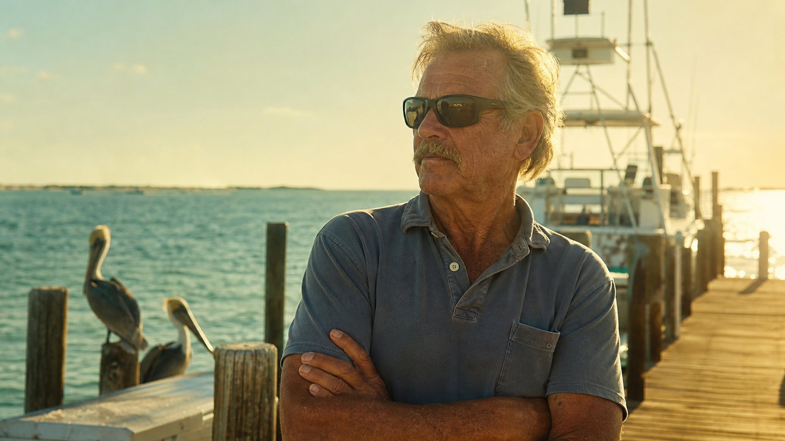
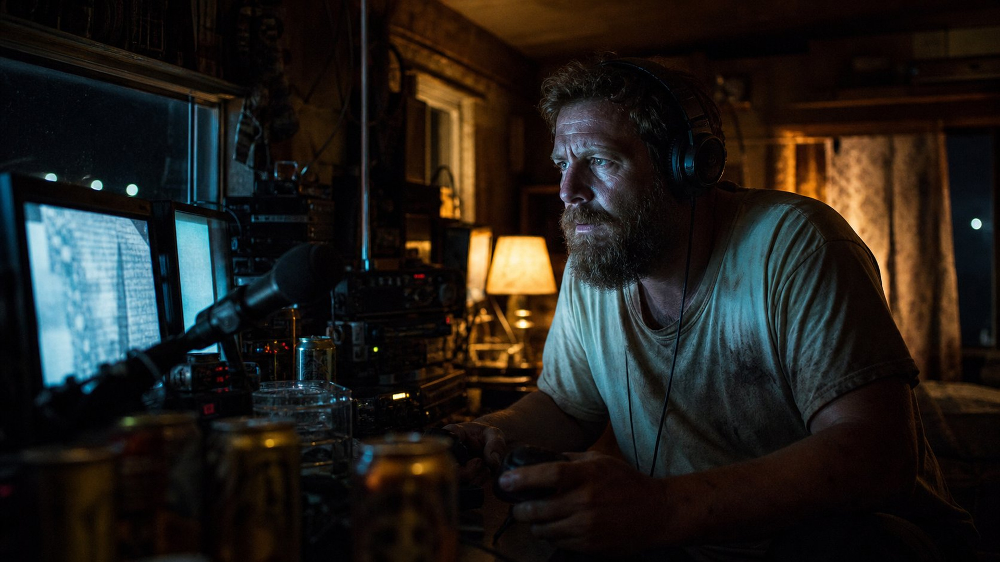
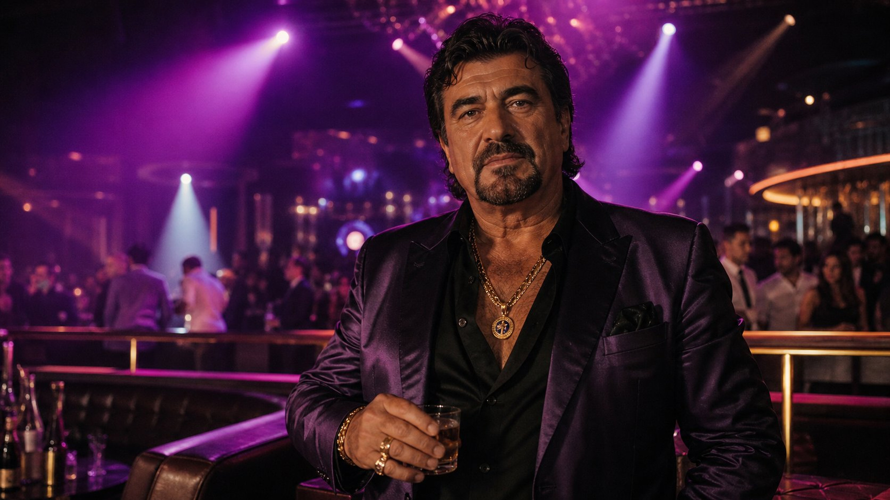
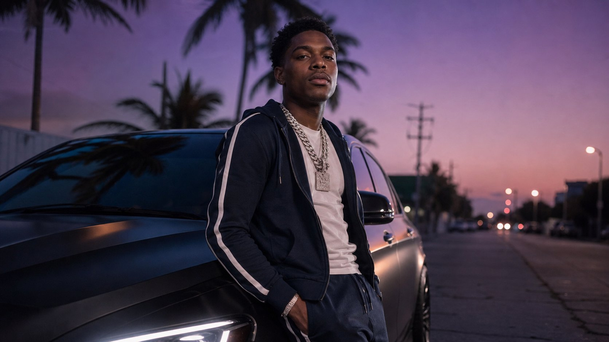
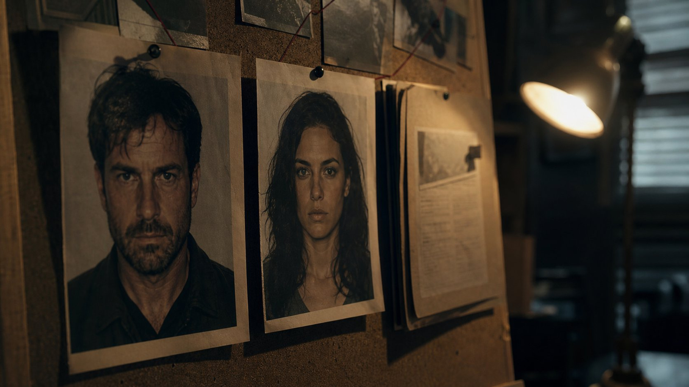

OFFICIEL

Brian Heder
Contrebandier maritime, chantier naval, troisième épouse Lori ; il loge Jason et l'envoie collecter.
S4 · G2 · Hub
Jason, Lucia et les neuf noms officiels qui gravitent autour d'eux. Ce hub rassemble les portraits, les liens de parenté criminelle et le statut de chaque information — sans inventer de rôle.
Rockstar a construit son casting autour de deux pôles : la contrebande des Keys, d'où vient Jason, et la machine à clout de Vice City, où Lucia doit exister. Chaque carte ci-dessous indique son statut et mène à la fiche détaillée.

Contrebandier maritime, chantier naval, troisième épouse Lori ; il loge Jason et l'envoie collecter.

Ami de Jason, associé de Brian, veille permanente des communications Coast Guard.

Immobilier, club de strip-tease et studio : l'empire légitime bâti sur un passé de rue.

Patron de label « plus hustler que gangster », il mise tout sur Real Dimez.

Deux noms sans fiche complète : le fixer de l'édition Ultimate et la troisième épouse de Brian.
Aucune liste complète n'a été publiée par Rockstar. Deux comédiens sont confirmés à l'antenne, le reste est rapporté — et deux noms ont été explicitement démentis.
CAST-08Stephen Root (Brian Heder) et Jim Santangeli (rôle non identifié) ont confirmé leur participation.CAST-09Manni L. Perez est identifiée comme Lucia via sa nomination aux Game Awards 2026.CAST-10Jason reste sans comédien confirmé ; Dylan Rourke est l'attribution la plus citée, Troy Baker et Roger Craig Smith ont démenti.CAST-13Aucun antagoniste principal officialisé : les théories Boobie / Brian / Raul restent ESTIMATION.